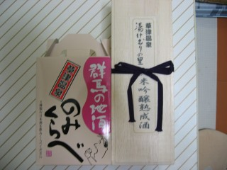

ローカル線の旅シリーズ(んざそら)、第三弾。JR吾妻線に乗りに行く。とわいえ、うちは似非乗り鉄なので草津温泉と兼ねることにした。とりあへずカネがないので、上越新幹線ではなく在来線に乗る。写真は、上野から高崎まで乗車したJR高崎線のE231系。場所は、上野駅。
高崎に着くと、横川行きのJR信越線が発車しようとしていた。んが、見慣れない車両。なに、これ?
JR吾妻線はJR上越線渋川からの路線なのだが、(多分)全列車が高崎まで乗り入れている。終点の大前まで行く列車は少なくて、自分たちが乗ったのも長野原草津口止まり。写真は、高崎に戻るときに乗った国鉄115系。
 長野原草津口から草津温泉までは、JRバスで40分程かかる。写真は、湯畑の近くで買った地酒。今回、参考にさせてもらったWebサイトは「2005/3/6 「１８きっぷ」で行く吾妻線 温泉満喫の日帰り紀行」。
前日は、高崎のホテルに泊まった。ドラマ「クライマーズハイ」を観た影響で土合に行ってみたかったのだが、前日からの雨で上越線は運転見合わせとのこと。だるま弁当を買って、両毛線に乗ることにする。まずは高崎線で新前橋に移動する必要があると思い込んで、国鉄211系に乗る。なんと、ドアの開閉は押ボタン方式なのね。
新前橋でだいぶ待つと、小山行きの列車が到着。どうやら両毛線も高崎まで乗り入れていたみたいで、すでに乗客がいる。写真は、途中の桐生駅で停車していた渡良瀬渓谷鉄道。
1時間半弱で、小山駅に到着。写真は、新前橋から乗ってきた両毛線の国鉄211系。駅構内で、だるま弁当を食う。東北本線(宇都宮線)も、風雨の影響でダイヤが乱れていた模様。
宇都宮線でまっすぐ帰るにはまだ時間が早いので、水戸線に乗ってみることにする。写真は、(多分)国鉄115系←間違い。403系または415系だった。この種類の塗装って、自分にはなじみがないのである意味新鮮。
新鮮と同時に、なじみのない塗装(ここでは湘南色以外という意味)は車種がよくわからないときもある。こちらは、ホームの反対側に停車していた水戸線の国鉄211系……だと思う←これも間違い。415系1500番台。
友部に到着したところ、お嫁さんが疲れてきた。そこで、首都圏に戻ることにする。常磐線の上りを待っていると、やってきたのは新型E531系。
友部から上野までは1時間半ぐらいだろうと思っていたのだが、2時間以上もかかるのね。上野に着いたら、さすがに自分もクタクタ。とりあへず、スーパーひたちを撮っておしまい←意味不明。
ビデオデッキは、120分テープを3倍モードで使用しても6時間までしか録画できない。前々から不便だな～。HDD＆DVDレコーダー欲しいな～と思っていたのだが、アキバのヨドバシカメラでTOSHIBAのRD-XD92Dが安かったので思わず衝動買いしてしまう。加湿器のフィルターをポイント交換で入手するのが、本来の目的だったのだが……。HDD録画機能自体は便利でよいのだが、ネットを調べてみると東芝機の不具合情報が多くて不安。どのメーカーも不具合はあると思うのだが、いきなりすべての情報(HDDに記録されている全情報)がなくなってしまうというのは致命的だろ。ちなみにDVD録画機能は、まだ一度も使用していない。
PC(Cathy)の不調は、いまだ直らない。
前々日、生まれて初めて名古屋で下車。東海道新幹線で何度も停車はしていたけど、降り立ったのは生まれて初めて。名鉄(名古屋鉄道)って、運賃が高いのね～。前夜お嫁さんと合流して、「世界の山ちゃん」で手羽先を食う。この日は、味噌煮込みうどんを食って名古屋城へ行く。大須を観てまわって、名古屋駅に戻ってくる。夕飯は、名古屋コーチンを適当につまむ。帰りの新幹線は、二人ともグッチョリ眠ってしまう。食いすぎ＆飲みすぎだよ……。